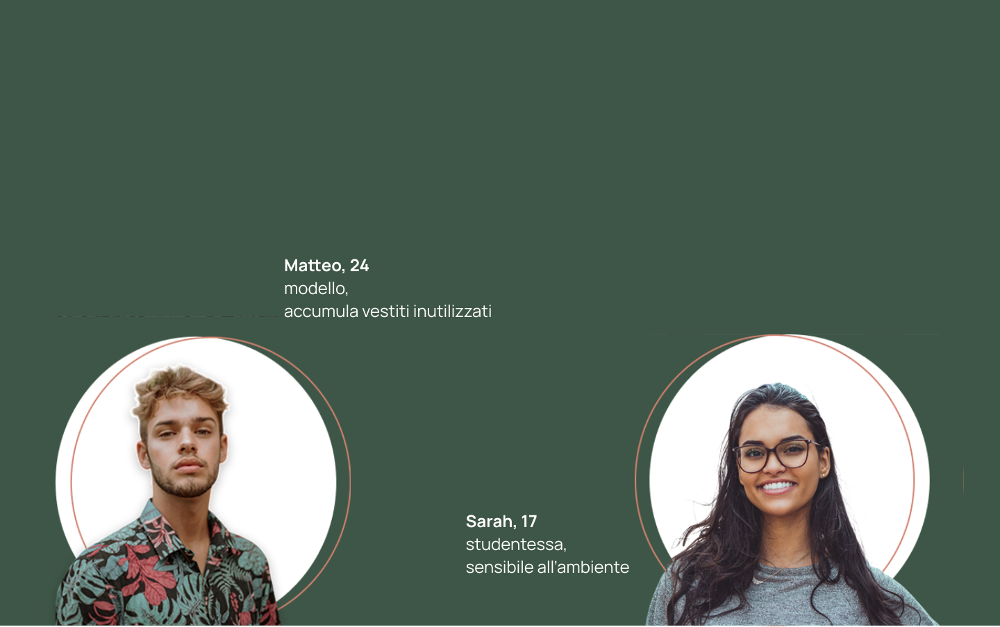
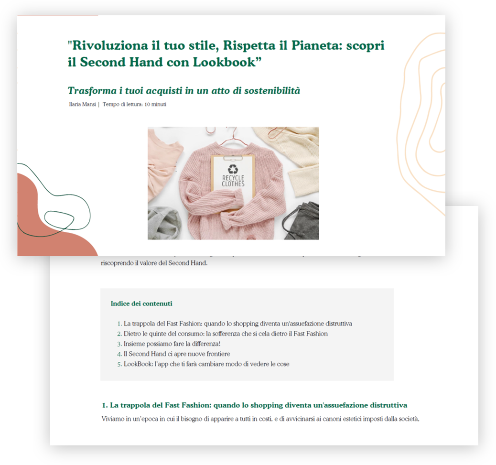

LookBook
Concept editoriale & UX writing
Progetto editoriale dedicato alla moda second-hand: blog post strutturato per coinvolgere un target giovane, normalizzare il riuso e superare i pregiudizi legati al fast fashion.
LookBook è un progetto editoriale e di copywriting dedicato alla moda second-hand e al consumo consapevole. Il contenuto è pensato per coinvolgere un target giovane attraverso storytelling, tecniche di persuasione e una struttura scansionabile.
Vendere e acquistare vestiti di seconda mano può essere complesso e frustrante. I fondatori di LookBook hanno vissuto questa difficoltà in prima persona e hanno voluto creare un sistema più semplice e accessibile per dare nuova vita ai capi inutilizzati.
Obiettivo del progetto
- Promuovere una visione positiva e attuale del second-hand
- Superare i pregiudizi legati al riuso
- Coinvolgere il lettore con uno storytelling autentico e persuasivo
TARGET

Target: Generazione Z
Tone of voice: diretto, empatico, colloquiale, privo di giudizio.
L’obiettivo è creare una relazione di fiducia con il lettore, accompagnandolo nella riflessione piuttosto che convincerlo in modo esplicito.
Strategia di copywriting
Il blog post è strutturato per mantenere alta l’attenzione fino all’ultima riga, attraverso:
- headline persuasive
- paragrafi brevi e scansionabili
- uso dello storytelling
- principi di persuasione applicati in modo naturale
La scrittura alterna informazioni, esempi e riflessioni personali per rendere il contenuto più umano e credibile.
Anteprima
Estratto della versione desktop del blog post.

Risultato
Il progetto dimostra come copywriting e strategia editoriale possano diventare strumenti efficaci per comunicare valori, creare consapevolezza e costruire un dialogo autentico con il pubblico.